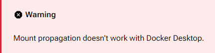

🛠️ Installation & Prerequisites#
Before you deploy DMB, make sure your environment and accounts are ready.
✅ System Requirements#
- Docker or Docker-compatible environment
- Linux system (WSL on Windows)
- Minimum 2 vCPU, 2GB RAM, SSD recommended
- External media server such as Plex, Jellyfin, or Emby (optional but recommended)
Docker Desktop
Docker Desktop CANNOT be used to run DMB.
Docker Desktop does not support the mount propagation required for rclone mounts.

See the deployment options to run DMB on Windows through WSL2.
🔐 Required Credentials#
| Service | Required Info |
|---|---|
| Debrid | API Key (Real-Debrid) |
| GitHub | Token (if using the sponsored Zurg repo) |
📌 See Configuration → Integration Tokens
📂 Required Directories#
You’ll need to bind mount the following volumes when running the container:
| Container Mount Path | Description |
|---|---|
/config |
Location for configuration files |
/log |
Location for logs |
/zurg/RD |
Location for Zurg RealDebrid active configuration |
/data:shared |
Location for rclone mount to host |
/riven/backend/data |
Location for Riven Backend data |
/mnt |
Location for Riven symlinks |
/postgres_data |
Location for PostgreSQL databases |
/pgadmin/data |
Location for pgAdmin 4 data |
/zilean/app/data |
Location for Zilean data |
/config
If a Zurg config.yml and/or Zurg app is placed here, it will be used to override the default configuration and/or app used at startup
/data:shared
The :shared must be included in order to support mount propagation for rclone to the host
🧰 Preparation Checklist#
-
Choose your deployment method:
-
Run the container and access the web UI at the configured port
- View real-time or service logs to verify service health